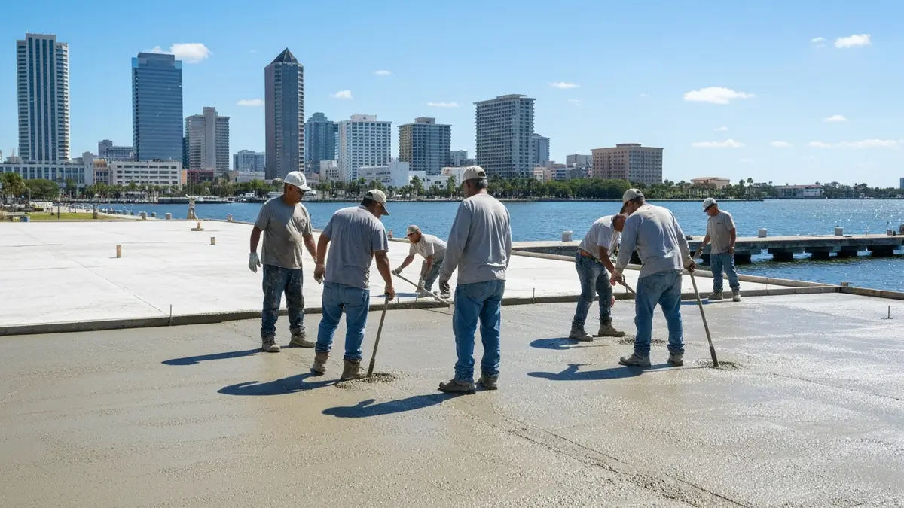

St Petersburg's unique blend of vibrant urban living and serene coastal charm makes durable, aesthetically pleasing concrete surfaces essential for its residents. From the historic bungalows of Old Northeast to the modern high-rises downtown and the luxurious waterfront estates of Snell Isle, properties here demand concrete that can withstand Florida's intense sun, heavy rainfall, and occasional salt spray. Whether you envision a welcoming driveway for your Gulfport home, a stylish patio for entertaining guests in Shore Acres, or a slip-resistant pool deck to complement your Tierra Verde oasis, our services are tailored to enhance the beauty and functionality of your St Pete lifestyle, providing longevity against the elements while reflecting the city's diverse architectural character.
Tampa Concrete Pros deeply understands the specific demands of St Petersburg's environment. Being local to the Tampa Bay area, we possess intimate knowledge of Pinellas County's soil conditions, building codes, and the unique challenges posed by coastal proximity and tropical weather. Our teams are frequently working across St Pete, from the bustling downtown core to the quiet residential streets of Crescent Lake, ensuring a rapid response time and a seamless service experience. We pride ourselves on our reputation for reliability and quality craftsmanship that truly resonates with the St Pete community.
For St Petersburg homeowners, our specific service advantages are clear. We specialize in concrete solutions designed to combat the intense Florida sun, utilizing heat-reflective and UV-resistant sealants for lasting color and comfort on patios and pool decks. Our expertise extends to creating highly durable, slip-resistant surfaces crucial for pool areas frequently exposed to water, a common feature in many St Pete homes. Moreover, we focus on achieving finishes that complement St Pete's diverse aesthetics, whether that's a classic broom finish, elegant stamped concrete, or a modern decorative overlay.
St Petersburg, the largest city in Pinellas County, forms a vital part of the greater Tampa Bay metropolitan area. Located on the peninsula between Tampa Bay and the Gulf of Mexico, our services extend across this vibrant city. We frequently serve neighborhoods from the historic charm of Old Northeast, the affluent shores of Snell Isle, and the family-friendly community of Shore Acres, down to the bustling Downtown area and the peaceful residential zones of South St Pete. Our crews are familiar with all major arteries like I-275, US-19, and local roads such as 4th Street N and Central Avenue, ensuring efficient service delivery. Whether your property is near Tropicana Field, the St Pete Pier, or the Salvador Dalí Museum, we are your trusted local concrete experts.
The cost varies significantly based on project size, complexity, and chosen finishes (e.g., stamped, colored). Given St Petersburg's diverse property types, from bungalows to sprawling estates, prices can range widely. A basic driveway might start around $X,XXX, while a complex decorative pool deck could be $X,XXX+. We provide detailed, no-obligation quotes tailored to your specific St Pete property.
Most standard concrete driveway or patio installations for a typical St Petersburg home are completed within 3-7 days, including site prep and pour. Larger or more intricate pool decks, especially those with custom finishes, may take 5-10 days. Curing time then follows. St Pete's warm, sunny weather often aids in the curing process.
Absolutely! Tampa Concrete Pros proudly serves the entire city of St Petersburg. From the northern reaches including Riviera Bay and Snell Isle, through the vibrant downtown and Grand Central District, down to the communities of Gulfport and South St Pete, our teams cover every neighborhood. We're dedicated to bringing our top-tier concrete services to all residents and businesses within St Pete.
For St Petersburg's climate, we highly recommend finishes that prioritize durability, heat reflection, and slip resistance. Light-colored or reflective concrete and specialized coatings are excellent for pool decks and patios to reduce heat absorption. A broom finish provides superior slip resistance, crucial for wet areas. Lastly, a quality sealant is vital for all surfaces to protect against UV rays, moisture, and potential salt exposure near coastal properties.
Ready to schedule your concrete driveways, patios, and pool decks service in St Petersburg? Call us today or use the contact form above — we serve St Petersburg and all surrounding areas of Tampa, FL. Most St Petersburg jobs are scheduled within 48-72 hours.
We're your local concrete experts serving St. Petersburg and all surrounding areas.
📞 Call (813) 705-9021